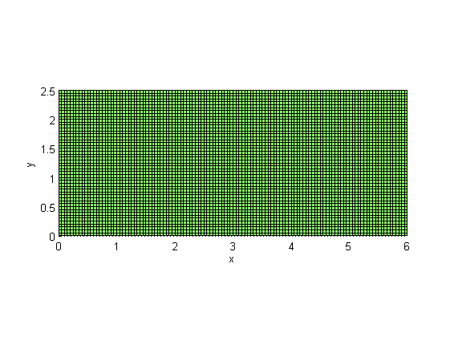
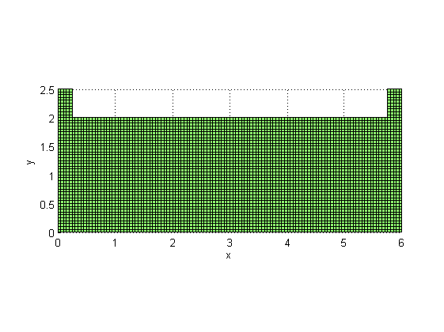
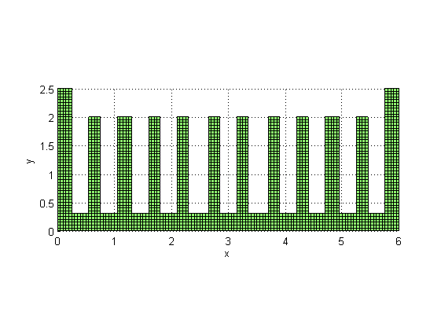
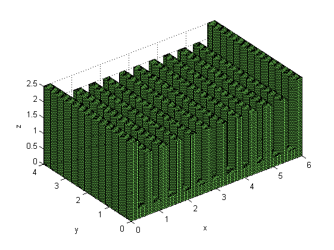
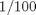

Create volume mesh of a heat sink
This example demonstrates how to use the toolbox NIHU to generate the finite element volume mesh of a heat sink.
Contents
Geometrical and mesh parameters
The geometrical and mesh parameters of the heat sink are defined below: All the dimensions are expressed in cm.
L = 6; % total width of the heat sink D = 4; % total depth of the heat sink H = 2.5; % total height of the heat sink h1 = .3; % total height of the bottom slab h2 = 2; % height of the internal arms n = 12; % number of arms l = L/(n*2-1); % width of an arm Le = .05; % element length
Build cross section
The heat sink is created by meshing its cross section and extruding it to form a volume mesh. The cross section is built by creating its bounding slab
mesh = create_slab([L,H],ceil([L,H]/Le)); figure; plot_mesh(mesh);
The internal arms are shorter than the two side arms. This is reached by removing the top of the cross section at the internal positions using the toolbox function mesh_select and manual mesh structure modifications.
eps = 1e-3; % tolerance exp = sprintf('x < %f | x > %f | y < %f', l+eps, L-l-eps, h2+eps); % find the indices of elements and nodes that satisfy the expression [nodind, elind] = mesh_select(mesh, exp, 'ind'); % select only the appropriate elements and nodes manually mesh.Elements = mesh.Elements(elind,:); mesh.Nodes = mesh.Nodes(nodind,:); figure; plot_mesh(mesh);
The individual arms are created by removing the elements between neighboring arms using the toolbox function mesh_select and manual removing.
for i = 1 : n-1 start = (2*i-1)*l; stop = 2*i*l; exp = sprintf('x < %f | x > %f | y < %f', start+eps, stop-eps, h1+eps); [nodind, elind] = mesh_select(mesh, exp, 'ind'); mesh.Elements = mesh.Elements(elind,:); mesh.Nodes = mesh.Nodes(nodind,:); end figure; plot_mesh(mesh);
Build the volume mesh
The volume mesh is created from the cross section by rotating it into the plane followed by extrusion along the direction.
mesh = rotate_mesh(mesh, [0 0 0], [1 0 0], pi/2);
ny = ceil(D/Le); % number of elements in the y direction
mesh = extrude_mesh(mesh, [0 D 0]/ny, ny);
figure;
plot_mesh(mesh);
view(3);
 The unit of mesh dimensions are changed from cm to m by scaling by a factor of , using the toolbox function scale_mesh.
mesh = scale_mesh(mesh, 1/100);